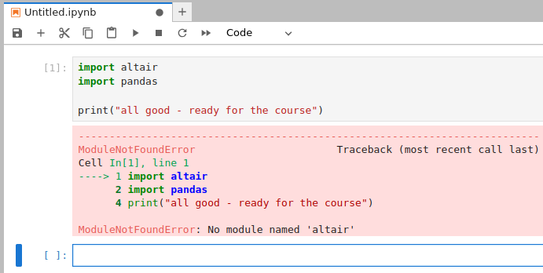

Software install instructions
Packages that we will need
In this course we will need Python 3 and the following Python libraries/packages:
jupyterlab
altair
pandas (comes with altair)
vega_datasets (optional)
numpy (optional)
matplotlib (optional)
How to install Python and the packages
If you are used to installing Python packages, you can use your preferred installation method. However, we recommend to not install these system-wide and never to install using administrator privileges.
If you are unsure or the first time installing Python and Python packages we recommend to install Anaconda which will give you a Python 3 environment and almost all the above required packages. Once you have installed Anaconda, create a new environment and install altair into it.
Finally, please verify the installation (below).
How to verify your installation
Open the Anaconda Navigator.
Find the JupyterLab tile and “launch” it.
If you are on Linux or macOS, you can open JupyterLab from the terminal by typing jupyter-lab.
It will hopefully open up your browser and look like this:

JupyterLab opened in the browser. Click on the Python 3 tile.
Once you clicked the Python 3 tile it should look like this:

Python 3 notebook started.
Into that blue “cell” please type the following:
import altair
import pandas
print("all good - ready for the course")

Please copy these lines and click on the “play”/”run” icon.
This is how it should look:

Screenshot after successful import.
If this worked, you are all set and can close JupyterLab (no need to save these changes).
This is how it should not look:
{kind=link}

Error: required packages could not be found.